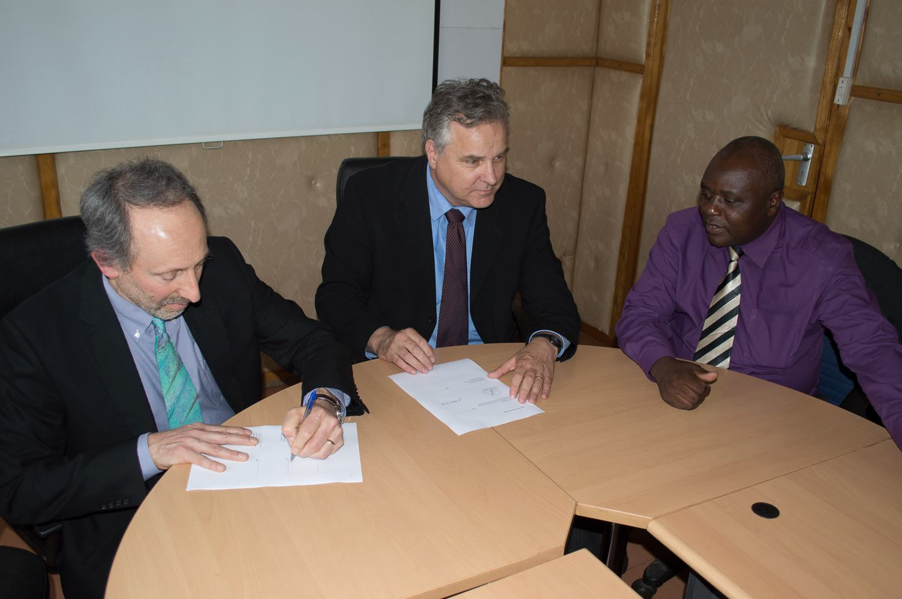
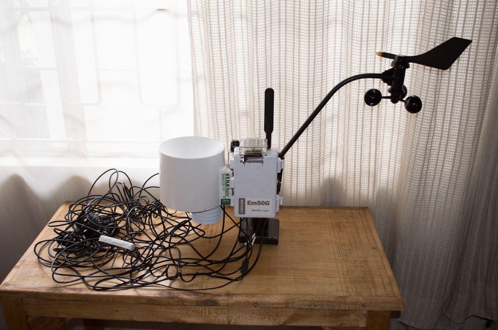
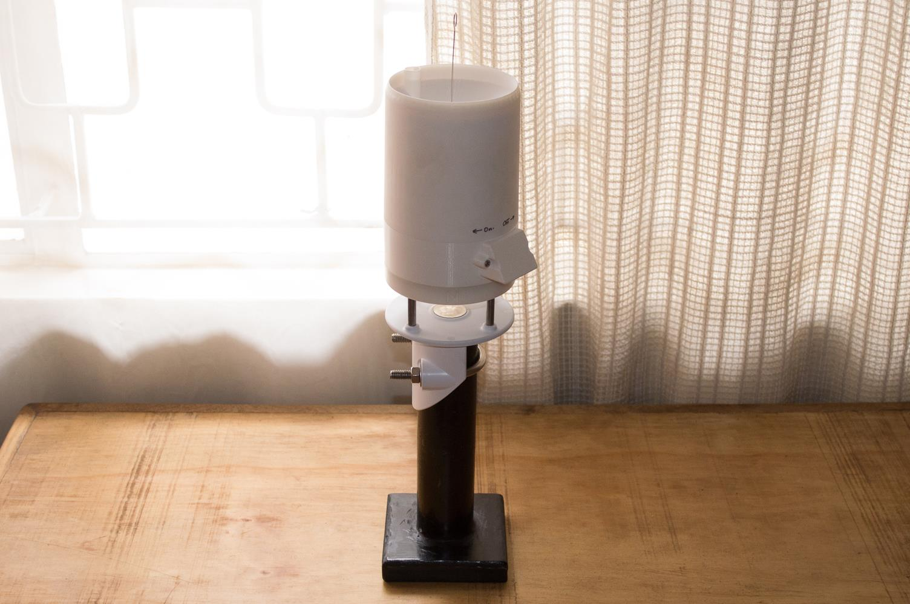
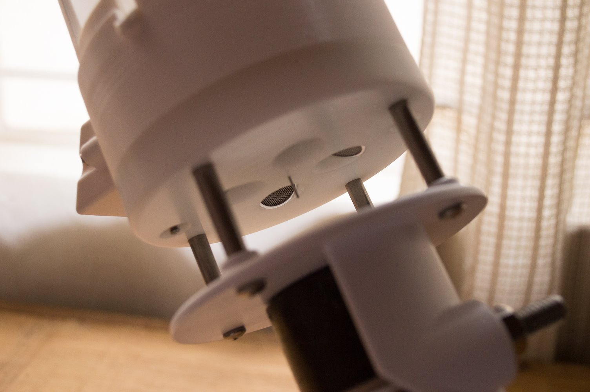
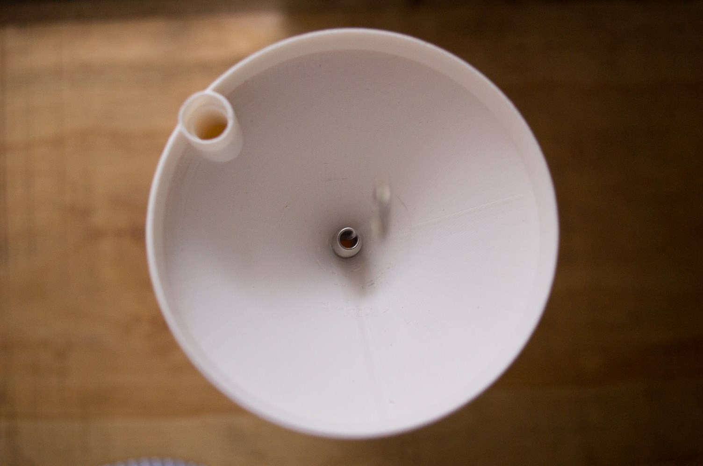
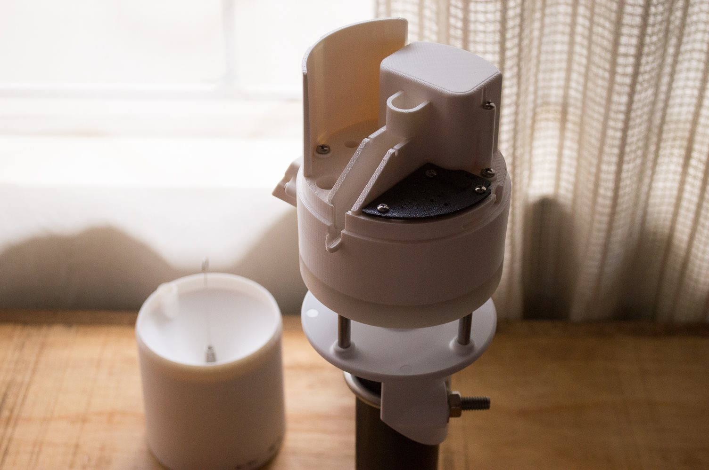

Progress on TAHMO
POSTED 27 MAY 2014
In one of my first posts I described three goals I have for my time in Kenya: learn Swahili, conduct research for my master's thesis, and pilot TAHMO. As of this month I've completed my third and final Swahili class; I'm not fluent but I've made significant progress from where I was eight months ago. (After I return home I will be tested to place my Swahili ability on a language proficiency scale.) Last week I wrote about my new research topic and how I will use that for my master's thesis. So, of my three original goals, that leaves piloting TAHMO.
TAHMO is a proposed network of 20,000 weather stations across sub-Saharan Africa. The initiative is led by professors John Selker from Oregon State University (who is also one of my advisors) and Nick van de Giesen from Delft University of Technology. I've been involved in the project since 2012. After I was awarded a Boren Fellowship to come to Kenya, we decided it would make sense to target Kenya as the first country in which to launch TAHMO.
Weather data is typically regarded as a public good, meaning it is the responsibility of a country's national government to collect and disseminate weather data for public usage. For TAHMO, that means we must establish agreements with the governments of each and every country in sub-Saharan Africa to achieve our vision.
When I arrived in Kenya back in September, I immediately reached out to the Kenya Meteorological Service (KMS), hoping to begin the process of negotiating a memorandum of understanding. A presentation to KMS' senior staff kicked off a six month negotiation process. Last month the MOU was finally signed. The document specifies the terms of TAHMO's partnership with KMS, including how data will be shared. John and Nick made the journey to Nairobi for the signing ceremony. We hope our MOU with the Kenyan government will serve as a template for future negotiations with other countries.
From left to right: John, Nick, and KMS' deputy director, Peter Ambenje.
Now comes the fun part. Since the MOU has been signed, we are beginning the process of deploying TAHMO in Kenya. It will require time, local staff, elbow grease, and of course weather stations. TAHMO's first generation weather station uses sensors made by Decagon Devices. The station shown below has sensors for precipitation, wind speed and direction, temperature, relative humidity, and solar radiation.
Each sensor has a cable that plugs into the data logger (the white box labeled Em50G). The data is uploaded daily over the local GSM network. A solar panel above the data logger powers the system. The sensors come with cables as long as five meters so that each can be mounted separately with enough length to reach the data logger. However, in our case the cables are unnecessary since we are mounting all the sensors together. Even worse, the cables are also a target for theft. With this in mind, Decagon has been hard at work developing a next-generation weather station. Last month I was sent a 3D printed model of their progress.
Despite its compact size, this station measures all of the same parameters as the station pictured previously. However, there are some important differences. The sensors and data logger have been combined into a single device. There are no external wires and no moving parts. Instead of using a Davis cup anemometer (the black arm with the spinning cups and the wind vein), this new device uses a sonic anemometer. In layman's terms, this means we are measuring the wind by sound.
Here's a close-up of the anemometer:
The top of the device is a rain gauge. Instead of using a traditional tipping bucket (another moving part that is prone to causing problems), the rain gauge detects precipitation by counting drips of water that pass through its funnel. The hole on the left side of the funnel is the housing for the solar radiation sensor.
The space within the rain gauge funnel houses the batteries, the cell antenna, and the electronics:
Remember, the photos above are of a model made with a 3D printer. The actual station is still in development, but is on track to ship by the end of this year. Obviously we are very excited about putting this innovation to use for TAHMO.
As an aside, the stand used in the photos above is a bit of a story in itself. I brought Decagon's model to Addis Ababa, Ethiopia last month to represent TAHMO at a UNDP conference on climate change adaptation in Africa. Before leaving Nairobi, I realized I needed a way to mount the model so it would stand upright on a table (unless I wanted to hold it the whole time). But the stand needed to be small enough to fit in my luggage. I drew a sketch of what I wanted and then set out to find a welder in Kibera. I found a man who was able to meet my specifications for only 600 schillings (~$7). The stand was completed by 10am the next day. The convenience of going to Kibera to have almost anything I need made by hand within 24 hours is definitely a privilege I will miss when I leave Kenya.
Stay tuned for another update on TAHMO before my Boren Fellowship expires next month.